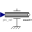

MovingActuatedDriveDemonstrates usage of model Rotor1D mounted on a moving body |
|
Diagram
{kind=link}
Information
This information is part of the Modelica Standard Library maintained by the Modelica Association.
This model demonstrates how a moving drive train modelled with 3-dim. multi-body elements (revolute, bodyCylinder) can alternatively be modeled with component rotor1D to speed up simulation. The movement of the two systems is identical and also the cut-torques in the various frames (such as: r1.frame_b.t and r2.frame_b.t).
The driving joints (r1, r2) with rotation axis {0,1,0} are modelled to be driven by a motor torque along the {1,0,0} axis. Basically, this means that an idealized bevel gear is used to drive the axes of the revolute joints.
Components (16)
| bodyCylinder |
Type: BodyShape |
|
|---|---|---|
| revolute |
Type: Revolute |
|
| world |
Type: World |
|
| torque |
Type: Torque |
|
| sine1 |
Type: Sine[3] |
|
| rotor1D |
Type: Rotor1D |
|
| torque1 |
Type: Torque |
|
| mounting1D |
Type: Mounting1D |
|
| r1 |
Type: Revolute |
|
|  | position1 |
Type: Position |
| sine2 |
Type: Sine |
|
| mounting1D1 |
Type: Mounting1D |
|
| r2 |
Type: Revolute |
|
| position2 |
Type: Position |
|
| mounting1D2 |
Type: Mounting1D |
|
| fixed |
Type: Fixed |